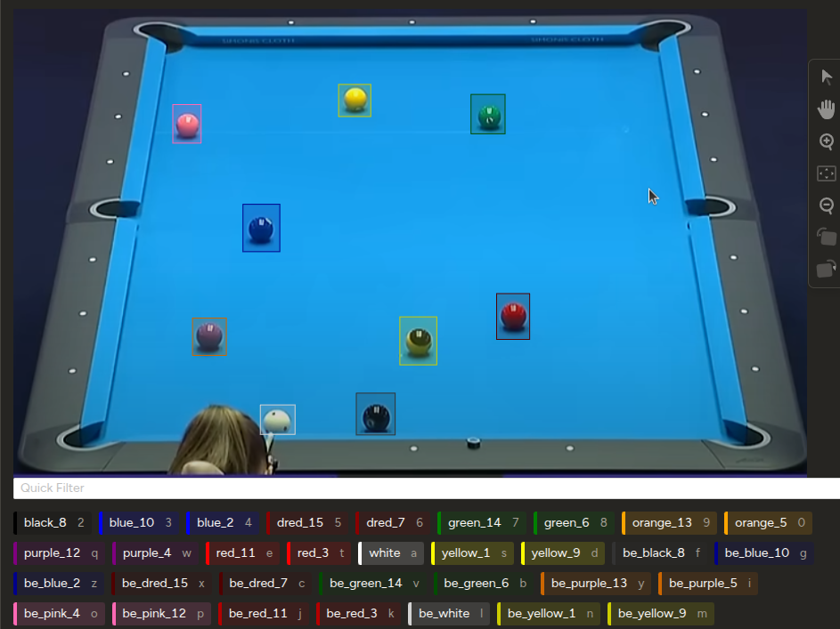

Creación de Dataset Custom
Afrontando el desafío de la falta de datos para las bolas "Black Edition" mediante la creación de un dataset propio, utilizando un flujo de trabajo de etiquetado asistido por IA.
El Desafío de los Datos de Nicho
Desafío
No existen datasets públicos y etiquetados para las bolas de billar "Black Edition", lo que impide entrenar un modelo capaz de reconocer esta estética moderna y de nicho.
Propuesta
Crear un dataset propio desde cero, implementando un flujo de trabajo de etiquetado asistido por IA para acelerar el proceso y asegurar la alta calidad de los datos.
Acciones
- Recolección de imágenes de sets "Black Edition".
- Uso del modelo existente para pre-etiquetar.
- Corrección manual y validación en Label Studio.
- Unificación del nuevo dataset con el original.
Resultados
Un nuevo dataset de alta calidad, verificado y listo para ser combinado con el original, habilitando el entrenamiento de un "Supermodelo" final, mucho más robusto y versátil.
Flujo de Trabajo: Etiquetado Asistido por IA
Paso 1: Pre-etiquetado Automático
Se utiliza el mejor modelo entrenado hasta la fecha (`best.pt`) como un "asistente". Este modelo analiza las nuevas imágenes "Black Edition" y genera propuestas de etiquetas en formato YOLO (`.txt`). Aunque puede equivocarse en la clase, su capacidad para detectar formas esféricas acelera enormemente el proceso.
Lógica del Pre-etiquetado (Python)
# Cargar el modelo existente
model = YOLO('ruta/a/best.pt')
# Procesar una nueva imagen
results = model.predict(nueva_imagen, conf=0.25)
# Guardar las propuestas de etiquetas
# ... (código para escribir los .txt)Paso 2: Corrección en Label Studio
Las imágenes y las etiquetas propuestas se importan a Label Studio. La tarea manual ya no es dibujar cada caja desde cero, sino un control de calidad mucho más rápido: corregir clases, ajustar cajas, eliminar errores y añadir las pocas detecciones omitidas. Finalmente, el dataset verificado se exporta.
Flujo de Trabajo de Verificación
Conocimientos y Conceptos Aplicados
Dataset Personalizado
Creación de un conjunto de datos propio y específico para un problema de nicho, una de las tareas más importantes en un proyecto de IA real.
Etiquetado Asistido (Pre-labeling)
Técnica avanzada que usa un modelo de IA existente para generar anotaciones iniciales, reduciendo drásticamente el tiempo de etiquetado manual.
Herramientas de Etiquetado
Uso de software profesional como Label Studio para gestionar, visualizar y corregir anotaciones de manera eficiente y colaborativa.
Verdad Absoluta (Ground Truth)
El dataset final, verificado y corregido manualmente, que se considera la fuente de verdad 100% correcta para entrenar y evaluar el modelo.
Unificación de Datasets
Proceso de combinar múltiples datasets (el original y el nuevo "Black Edition") en un único conjunto de datos más grande y diverso para entrenar un modelo más robusto.
Ciclo de Vida de IA
Demostración del ciclo completo de un proyecto de IA: del entrenamiento al análisis de errores, y de vuelta a la mejora de datos para un re-entrenamiento.
Eficiencia del Proceso de Etiquetado
Etiquetado Manual vs. Asistido por IA
Esta gráfica ilustra el ahorro de tiempo estimado al utilizar el modelo pre-entrenado para generar propuestas de etiquetas. La tarea humana pasa de ser la creación desde cero a una supervisión y corrección mucho más rápida.
Glosario de Términos
Conclusiones y Siguientes Pasos
Conclusiones Clave
- La creación de datasets personalizados es una habilidad crítica y a menudo inevitable para resolver problemas de nicho en el mundo real.
- El pre-etiquetado asistido por IA es una estrategia altamente efectiva que puede reducir el tiempo y esfuerzo de anotación manual en más de un 70%.
- Un flujo de trabajo robusto, que incluye scripts para conversión y verificación, es esencial para garantizar la integridad y calidad de los datos finales.
El "Supermodelo"
1. Unificar los Datasets
Combinar el dataset original de bolas de colores con el nuevo y verificado dataset "Black Edition" en una única estructura de carpetas (train/valid/test).
2. Crear el `supermodelo.yaml`
Generar un archivo de configuración final que apunte al dataset unificado y contenga la lista maestra completa con todas las clases de ambos sets.
3. Entrenar el Modelo Definitivo
Lanzar el entrenamiento final usando los pesos del mejor modelo actual (`best.pt`) como punto de partida para un `fine-tuning` sobre el dataset unificado y completo.